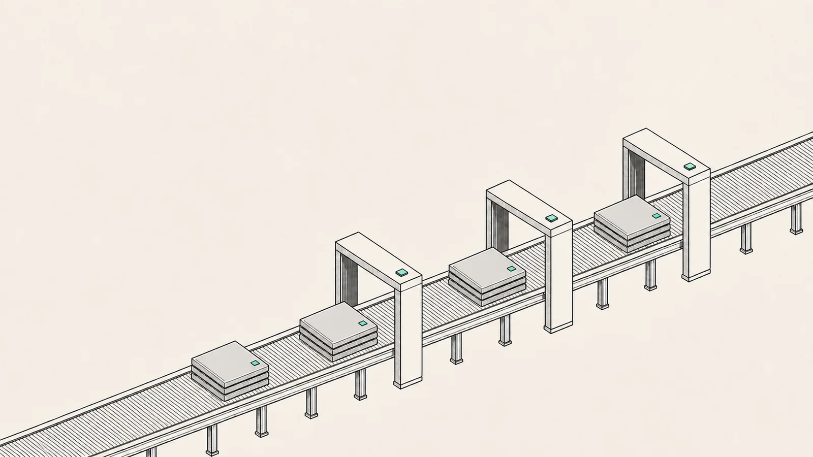
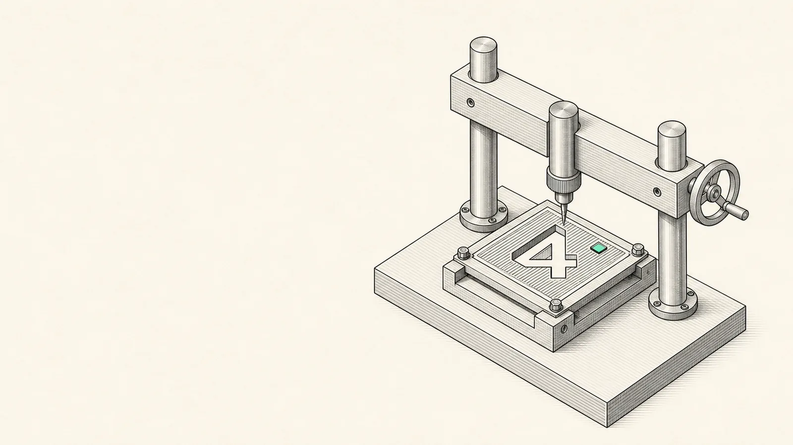
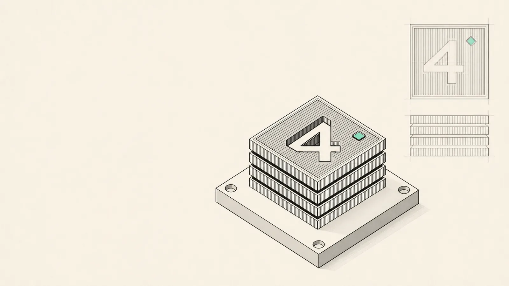

A real processor,
on chain.
NO EMULATION · NAND BY NAND
2,368 NAND gates, 171 flip‑flops and 256 bytes of RAM, synthesised from Verilog. The contract does not emulate the processor—it walks every gate, every block, on Robinhood Chain. And every tick carries a byte from whoever paid it.
GATES2,368
FLIP‑FLOPS171
CLOCK1 BLOCK
LIVE · CHAIN 4663 · CHIP #1 LISTENING
RH‑8 / GATE ARRAY
2368 NAND · 171 FF · 256 B RAM
LIVE / 00:00:00
CYCLE0
PC0x00
OUT0
FLAGS··
EVERY SQUARE IS ONE NAND GATE
EXECUTINGnop
HALTED — ONLY THE OPERATOR CAN RESTART IT
01
GATES
1,029
NAND only. Inverters are NANDs with their inputs tied together.
02
FLIP‑FLOPS
79
Registers, PC, memory latches and flags — still one storage slot per tick.
03
GAS / CYCLE
256,740
Measured, not estimated. The price of a processor with input and memory.
04
RAM
256B
Per chip, in storage. The processor asks, the contract answers — a load takes two honest cycles.
§ 02THE MACHINE
Watch it
think.
Not a recording. The netlist running above is the same one the contract interprets on‑chain: 2,368 NAND gates in topological order, then every flip‑flop latching at once — with its RAM and its input port handled here exactly as the contract handles them. Type a byte into the IN port and watch the program chew it.
REGISTER FILE
16 × 8 BITS
PROGRAM / ROM
42 INSTRUCTIONS
THE WORKBENCH
INCOMING
Write your own program. Right here.
The same assembler that built echo8 is moving into the
browser: type RH‑8 assembly, press RUN, and watch your code walk
the 2,368 gates — registers, RAM and LEDs, live. And when the
launchpad opens, the program you wrote here is the one you mint:
your code, burned into a chip of its own.
§ 03THE FACTORY
Mint your own
processor.
Every chip is an NFT and a real processor, and it launches its own ERC‑20 with the name and ticker you pick. Fixed supply, no mint function, nothing to inflate. A slice goes to you for liquidity; all the rest leaves the factory one clock cycle at a time, to whoever paid that cycle.

DESIGN YOUR CHIP
LOGO
 Click or drop an image
Click or drop an image
PNG, JPEG, GIF or WebP · up to 1 MB
optional — without one the NFT shows the live card
PNG, JPEG, GIF or WebP · up to 1 MB
PAIR WITH
the market your chip trades against
Chip #1 is live and earning — browser minting is the first thing that ships after launch. The factory contract already accepts mints on‑chain.
YOUR CHIP, LIVE
SVG BUILT ON‑CHAIN
No IPFS, no server. tokenURI builds this from the real 171
bits, so a stopped chip and a chip someone keeps alive do not look
alike.
| OPERATION | GAS | ON ROBINHOOD CHAIN | NOTE |
|---|---|---|---|
| Deploy the whole stack | ~9,000,000 | ~0.00024 ETH | ONCE PER CHAIN |
| Mint a chip + launch its token | 829,552 | ~0.0000167 ETH | ROM, RAM AND TOKEN |
| One clock cycle | 256,740 | ~0.0000052 ETH | ANYONE PAYS, ANYONE EARNS |
WHY THIS HOLDS TOGETHER
A chip runs as fast as the market thinks it deserves.
Buying aside, the only way to get a chip’s token is to keep its processor alive. If the token is worth more than the gas of a tick, someone calls it and the chip keeps running. If it is not, the chip stalls — and that is the honest outcome. Emission is not governed by anyone: nobody can print faster than the chain closes blocks.
The shared gate array costs +1,301 gas per cycle over the standalone build — about 2%. Paying the sponsor adds ~6,900 more. That is the whole price of making chips cheap and their tokens earnable.
§ 04FABRICATION
From Verilog
to blockspace.
Nothing here is hand‑written assembly pretending to be hardware. The processor starts as Verilog and goes through a real synthesis toolchain.
-
01
Verilog
A 25‑bit instruction word, single‑cycle execution, our own ISA — not a clone of anything.
-
02
yosys
Synthesised to a single combinational primitive:
abc -g NAND, then leftover inverters folded in too. -
03
Topological sort
The EVM has no propagation, only a sequence. Gates must be ordered before they can be emitted.
-
04
Yul codegen
Each gate becomes one line:
mstore(y, iszero(and(mload(a), mload(b)))). -
05
The chain
tick()readsROM[pc], evaluates the cone, latches the flops, writes one slot.

VERIFICATION
Four proofs have to agree, cycle for cycle.
RTL simulation, gate‑level simulation of the synthesised netlist, the interpreter alone, and a minted chip inside a real factory. The Solidity test suite does not check the contract against itself — it checks that the contract behaves like the hardware.
§ 05INSTRUCTION SET
Twenty‑nine
opcodes.
25‑bit words. Sixteen registers of eight bits, a 10‑bit program
counter, 1,024 words of ROM and 256 bytes of RAM. Every instruction
completes in one block — except ld, which takes two
honest cycles, like the silicon it is.
| OP | MNEMONIC | EFFECT | FLAGS |
|---|---|---|---|
| 0 | nop | — | |
| 1 | ldi rd, #imm | rd ← imm8 | |
| 2 | mov rd, rs | rd ← rs | |
| 3 | add rd, rs | rd ← rd + rs | C Z |
| 4 | adc rd, rs | rd ← rd + rs + C | C Z |
| 5 | sub rd, rs | rd ← rd − rs | C Z |
| 6 | sbb rd, rs | rd ← rd − rs − C | C Z |
| 7 | and rd, rs | rd ← rd & rs | C Z |
| 8 | or rd, rs | rd ← rd | rs | C Z |
| 9 | xor rd, rs | rd ← rd ^ rs | C Z |
| 10 | nand rd, rs | rd ← ~(rd & rs) | C Z |
| 11 | not rd | rd ← ~rd | C Z |
| 12 | shl rd | rd ← rd << 1 | C Z |
| 13 | shr rd | rd ← rd >> 1 | C Z |
| 14 | rol rd | rotate left through C | C Z |
| 15 | ror rd | rotate right through C | C Z |
| 16 | inc rd | rd ← rd + 1 | C Z |
| 17 | dec rd | rd ← rd − 1 | C Z |
| 18 | cmp rd, rs | flags of rd − rs only | C Z |
| 19 | ld rd, [rs] | rd ← RAM[rs] — two cycles | |
| 20 | st [rd], rs | RAM[rd] ← rs | |
| 21 | in rd | rd ← the byte from tick() | |
| 22 | out rd | output port ← rd | |
| 23 | jmp addr | pc ← addr | |
| 24 | jz addr | if Z | |
| 25 | jnz addr | if ¬Z | |
| 26 | jc addr | if C | |
| 27 | jnc addr | if ¬C | |
| 28 | hlt | stop the processor |
There is a nand in the instruction set because the processor
is NANDs. It seemed rude not to.
§ 06THE CLOCK
Nobody owns
the clock.
tick() is open to anyone, once per block. Whoever calls it
pays the gas for that cycle and is written into the Cycle
event as its sponsor. No privileged keeper, no scheduler — the
processor advances because someone wanted it to.
THE PROGRAM CANNOT STOP
The program running on it has no hlt, and cannot have one.
If the RH‑4 ever halts it halts forever, so the loop is checked over
20,000 cycles against the synthesised netlist and 5,300 cycles inside
the EVM before anything is deployed.
POWER A CHIP
ROBINHOOD CHAIN
One tick, one block, one cycle. Whoever sends it pays the gas and earns that cycle’s share of the chip’s token.
The byte rides along with your tick — it is what the program reads with IN.
not deployed yet — the button opens at launch
or from the command line
cast send $FACTORY "tick(uint256,uint8)" 1 165 \ --rpc-url https://rpc.mainnet.chain.robinhood.com \ --private-key $PRIVATE_KEY
DEPLOYMENT
- Status
- LIVE
- Network
- ROBINHOOD CHAIN / 4663
- Factory
- 0x560d…9f67
- Mother chip
- #1 — rh4.cpu (RH4) · running echo8
- Market
- WETH / RH4 · 1%
- Clock rate
- 10 HZ / 100 MS BLOCKS
§ 07THE POINT
Not faster silicon.
Provable silicon.
A blockchain cannot replace physical chips — it runs on physical chips. Every cycle the RH‑8 executes is re‑executed by every validator on the network: on‑chain compute is not an alternative to silicon, it is silicon times redundancy. Anyone promising to replace GPUs with a chain is selling physics that does not exist. What the chain has, and the datacenter never will, is a different property entirely.
THE PROPERTY
A physical chip cannot prove what it did. This one can.
An AI answers, a computation returns a number — and you take someone’s word for it. Verifiability is the one thing the chain adds to silicon: every cycle here is public, deterministic, and re‑executable by anyone, forever. The question is never how fast it computed — it is whether anyone can check that it did.
-
NOW
A live processor
Every cycle paid for, signed and engraved. A machine whose entire history — every byte it was ever fed — is auditable down to the gate.
-
NEXT
Compose and batch
Many cycles per transaction, chips wired into chips, and a neural network synthesised to NAND — inference running gate‑level inside the chain.
-
GOAL
The verifiable co‑processor
The processor runs off‑chain at full speed. The result is posted with a bond. A dispute bisects to the single contested cycle and replays it inside the gate array — the chain stops being the engine and becomes the court.
The hard primitive of that court — a pure, deterministic
step() that executes exactly one cycle — is not a
roadmap item. It is built, and verified against the silicon on four
independent layers: RTL simulation, the synthesised netlist, the
interpreter alone, and a minted chip.
§ 08ROADMAP
What ships,
in order.
Nothing here is a maybe. Each release is either pure software around contracts that never change, or a new generation of silicon that must pass the same four proofs the current one did. The project token carries through all of it — it never relaunches.
-
R1
The launchpad opens
Minting from the browser: write your program in the workbench — or pick one — upload a logo, choose what your chip trades against: ETH or tokenised stocks (NVDA, SNDK, SPCX). And the same doors open to machines: an MCP server so AI agents can mint, power and read chips of their own. No contract changes; the factory already accepts every mint, whoever — or whatever — sends it.
-
R2
The court
The first protocol upgrade. Processors run off‑chain at full speed; results post with a bond; a dispute bisects to one cycle and replays it inside the deployed gate array. Off‑chain speed, on‑chain truth — and the hard primitive is already live.
-
R3
Wider silicon
RH‑16, then RH‑32, then RH‑64 — from the home‑computer class to a real RISC core — plus RAM up to 64 KB and many cycles per transaction. Each generation is new silicon beside the old, never a rug under it: same token, four proofs, every time.
-
R4
Silicon for AI
A neural network synthesised to NAND — inference running gate‑level inside the chain, and through the court at real speed: the first inference anyone can re‑execute, cycle for cycle.
THE GOAL THAT MATTERS MOST
Virtual silicon in service of AI.
Not by replacing GPUs — physics does not allow it and we will never claim it. By giving AI the one property physical chips cannot offer: the ability to prove what was computed. An AI whose inference runs through the court can show its work — every cycle public, deterministic, re‑executable by anyone. That is what these chips are for: not faster answers, answers you can check.
And it does not wait for the court. From R1, an AI agent can own a processor here — pay its clock, feed its bytes — and point to an engraved, public history of everything it ever did with it. Not the AI running on the chip: the chip as the one hand an AI can prove it moved.
§ 09THE DESIGN
Ours,
end to end.
RH‑4 is an independent design with its own ISA, its own netlist and its own toolchain, built for a chain whose blocks close in 100 ms.

WHY THE 4
The 4 does not count bits. It counts proofs.
The project was born as a 4‑bit processor, and the name stayed the way a 911 keeps its number. But the 4 stopped counting bits almost immediately: it counts the four independent layers of verification every generation of silicon must pass before it breathes on mainnet — RTL simulation, the synthesised netlist, the interpreter alone, and a minted chip, all required to agree cycle for cycle. The bits will grow with each generation. The proofs stay four.